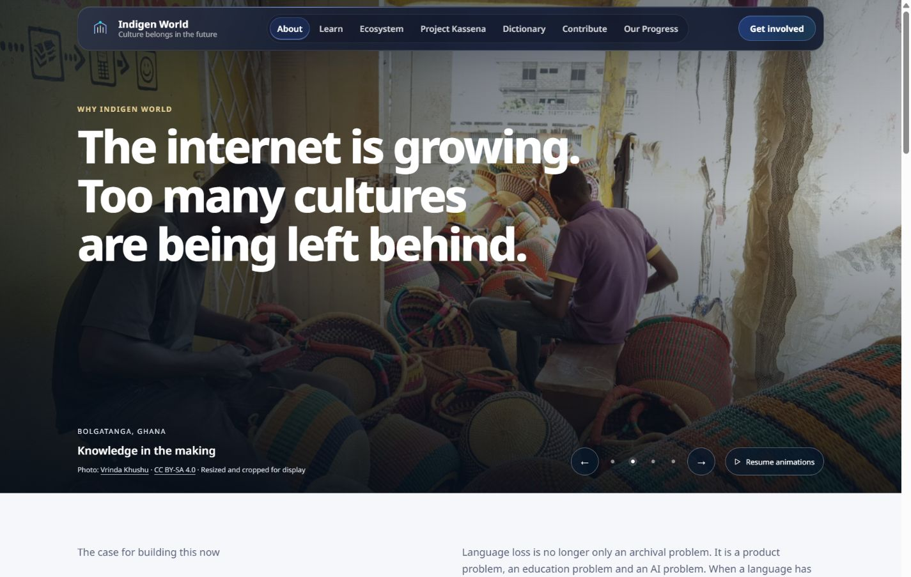
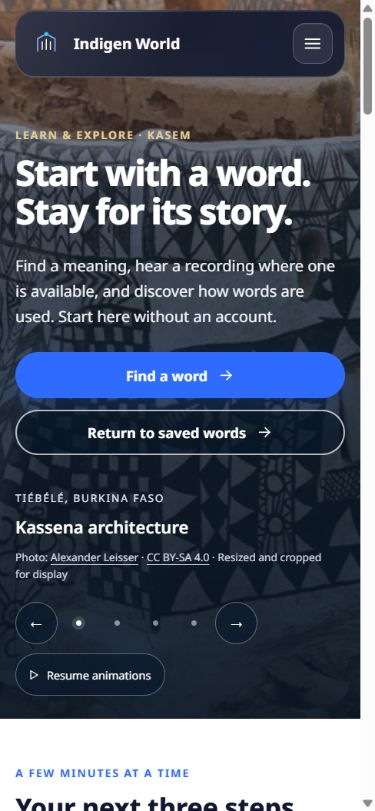
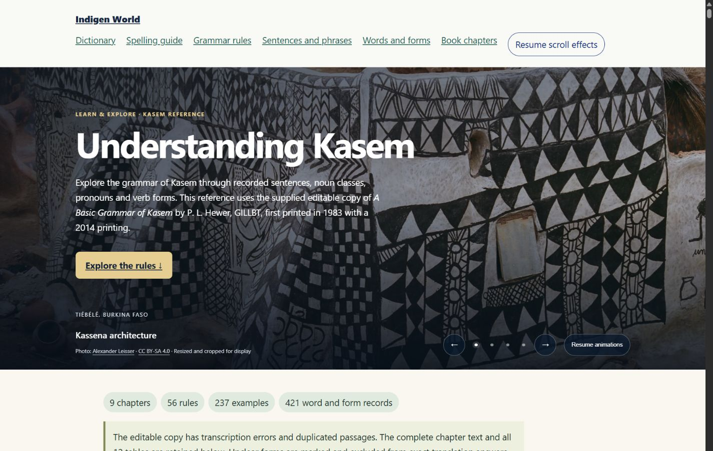

A visit to Indigen World can begin with a word, a shared community link or a question about our work. The cultural photo opening first introduced on the homepage now extends across the public website.

The banner moves gently between four credited cultural photographs. Each page keeps its own title and useful next step: search the dictionary, begin learning, share an expression, read our principles or contact the team.
The public Labs pages, community progress page and both Kasem reference guides also use the banner. Beyond the Reef shows it before the visitor chooses to start the music film; the film then takes over.

Text stays still while the photographs change. Use the arrows or dots to choose an image, or select Pause animations. Your pause choice carries to other public pages and the reference guides, including their scroll effects. A device's reduced-motion preference also keeps the opening still.

This update changes the welcome, while retaining existing content and workflows. The photographs have individual credits and licences; they do not claim to depict every language or community represented by the project.
Availability: Deployed and verified live on October 12, 2026, at indigenworld.com. This release covers the public Indigen World website, including its reference guides. Other applications and the separately hosted updates blog are outside this rollout.